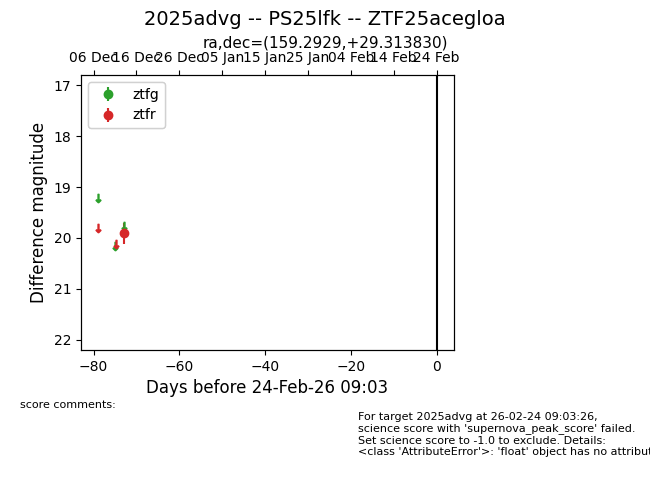
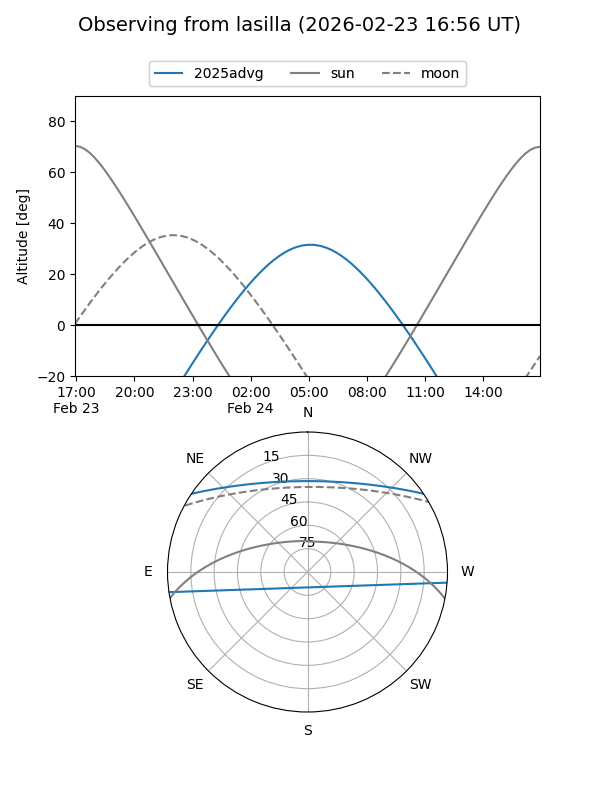
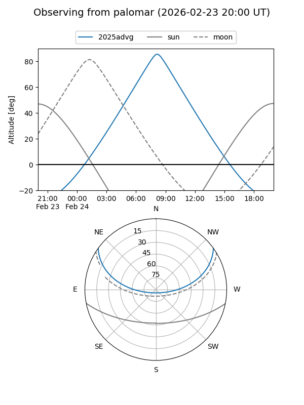

2025advg
Target 2025advg at 2025-12-31 01:01
Aliases and brokers:
FINK:
Lasair:
ALeRCE:
TNS:
YSE:
alt names
ZTF25acegloa (ztf,fink_ztf)
2025advg (tns,yse)
PS25lfk (panstarrs)
Coordinates:
equatorial (ra, dec) = 159.2929,+29.31383
equatorial (HMS+DMS) = 10:37:10.30,+29:18:49.79
galactic (l, b) = (200.7089,+60.44303)
Flags:
Photometry:
last ztfr=19.91
1 ztfr detections
Lightcurve

Visibility


Additional plots